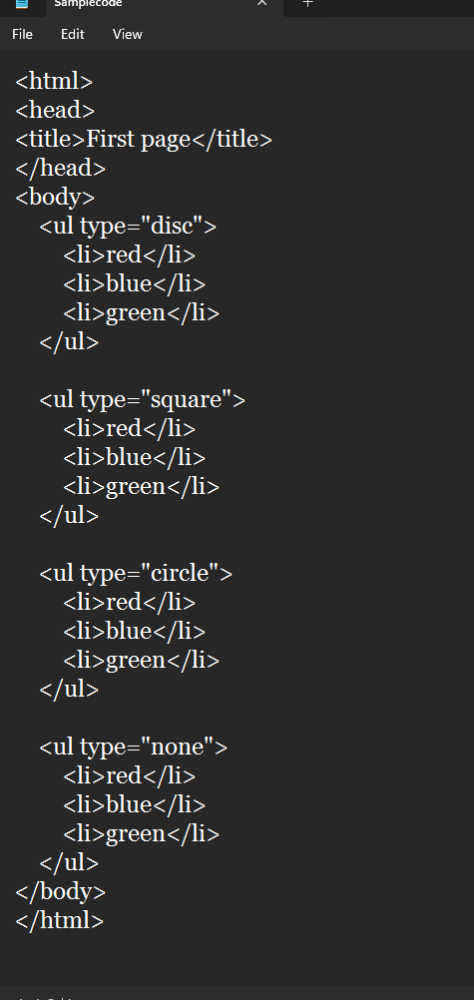
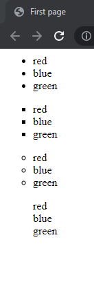
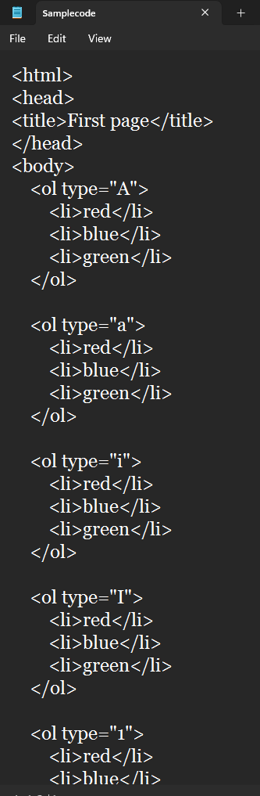
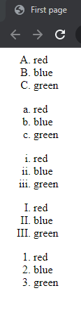
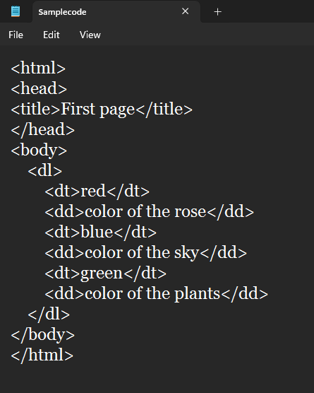
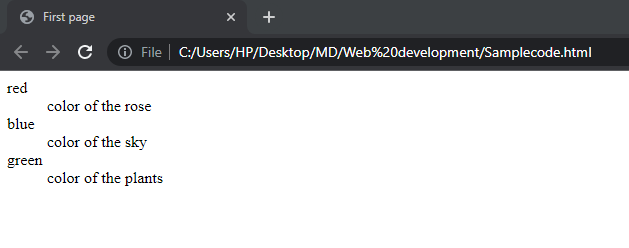

As the name says, this is used to make lists on the web page.
Mainly, there are three types of lists used in HTML,
Unordered Lists:These lists don't have an order. It is generally used with those datas, whose order does not have any importance. Ex: Grocery List. <ul> tag is used for making unordered lists
 Ordered Lists:These lists have an order i.e. numbers or letters. These are generally used with those datas whose order matters. Ex:Steps involved in a process. <ol> tag is used for making ordered lists
 Description Lists:In these list, each element have a discription attached with it. These are not used as commonly as unordered or ordered lists. <dl> tag is used for making discription lists
 Each content of the list is placed within <li> tag
ul and ol tag use type attribute to define the display of the lists.
The dl tag uses dt tag to display its content an dd tag to give discription of the given content.